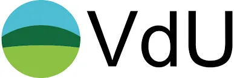

VdU Furtwangen e.V.
Der VdU ist eine Gemeinschaft von Unternehmern und vereint Industrie, Dienstleistung, Handel, Handwerk, Gastronomie und die freien Berufe wie Ärzte und Architekten in der Region Furtwangen, Neukirch und Gütenbach. Der VdU setzt sich für eine Stärkung und positive Entwicklung der Region ein und möchte besonders den Austausch und die Zusammenarbeit unter den Unternehmern fördern. Austausch, Entwicklung, Kompetenzen bündeln – statt Alleingang und Konkurrenz. Das Institut für Business Consulting e.V. ist seit Ende 2012 in einem Kooperationsvertrag mit dem VdU Furtwangen und legt einen großen Wert auf eine intensive Zusammenarbeit.
Zur Website (Öffnet in neuem Tab)